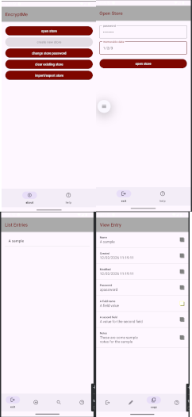
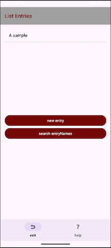
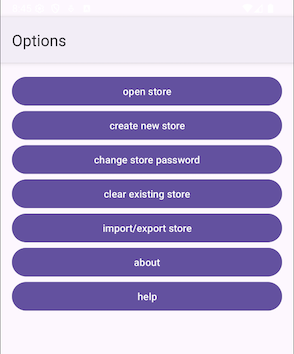
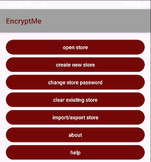
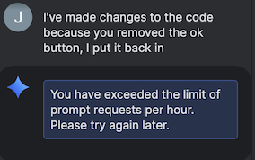

This file is maintained as the project progresses. The most recent entry is at the top of this file, the oldest at the bottom. This is how a blog works, I think.
The project sources can be found on GitHub: https://github.com/jplatipus/goodViberations
I have updated @ListEntriesActivityFunctionality.html and
@ViewEntryActivityFunctionality.html , in the latter a new image button is added to the
title bar. Can you update the code please?
When run, the app crashes. The logcat shows the cause being the new titlebar. The following prompt is issued:
I'm getting the following error in my running application. The error is: FATAL EXCEPTION: main
```
FATAL EXCEPTION: main
Process: com.j3t.dataentryapp, PID: 4317
java.lang.RuntimeException: Unable to start activity ComponentInfo{com.j3t.dataentryapp/com.j3t.dataentryapp.ui.activities.ViewEntryActivity}: java.lang.IllegalStateException: This Activity already has an action bar supplied by the window decor. Do not request Window.FEATURE_SUPPORT_ACTION_BAR and set windowActionBar to false in your theme to use a Toolbar instead.
at android.app.ActivityThread.performLaunchActivity(ActivityThread.java:4280)
at android.app.ActivityThread.handleLaunchActivity(ActivityThread.java:4467) with tag AndroidRuntime
```
Fix this issue
The error is fixed, the back button works as wanted.
|
 The four activities so far |
The functionality for open store is added in
OpenStoreActivityFunctionality.html. Some icons are added to the list entries activity. https://fonts.google.com/icons. gives the option of downloading the icons for Android (xml files) or web (svg vector files). I prefer to download them as svg, they are in the project's doc/img/GoogleIcons folder. Downloading svg files makes it easier to view the images, the resources manager in Android Studio is good at importing svg files, so this is the route chosen. The changes are added (new files in the drawables and images folders) to git, then a git commit is issued. This allows any unwanted changes to be reverted. The following prompt is given to generate the code changes: Could you update the code please. I have changed @CreateNewStoreActivityFunctionality.html , @ListEntriesActivityFunctionality.html and added @OpenStoreActivityFunctionality.html The app is run, but the navigation bar icons displayed do not match what the specification requests. A new prompt is issued: The navigation bar icons do not match the specs, could you check this please The app is run again, and the exit icon is still the old icon, even though it has been updated with a new drawable, so the following prompt is issued: I have changed the exit icon drawable, could you update the menus to reflect the new icon please The app is run again, this time the exit icon is the new icon. The open store functionality is as requested. It is interesting to note that no problems were encountered concerning the limit of prompt requests per hour. Android Studio has not been used for a couple of days, and the development laptop was switched off. Hence it is likely that the previous problems were due to leaving the laptop on for a prolonged period of time, with Android Studio running while I was fast asleep. The list entries activity has buttons for new entry and search entryNames, this functionality is also present in the navigation bar, so the buttons are removed from the list entries activity. The following prompt is issued to Gemini: I have updated @ListEntriesActivityFunctionality.html , btnSearchEntryNames and btnNewEntry have been removed. The agent updated the activity_list_entries.xml and ListEntriesActivity.kt files. The redundant buttons have been removed, and their actions are now correctly handled by the bottom navigation bar. Several changes are made to the project to implement the ViewEntryActivity:
The following prompt is issued to Gemini: I have updated @DataLayer.html and @DataLayerUnitTests.html with a new method loadEntry and loadEntryTest. I have updated @ListEntriesActivityFunctionality.html to pass the entry name to the ViewEntryActivity. I have created a new specification for the ViewEntryActivityin the file @ViewEntryActivityFunctionality.html . Could you update the code to reflect these changes please. For some reason Gemini has not updated ViewEntryActivity class. The following prompt is issued to ask it to do this: Please also update the class ViewEntryActivity in @ViewEntryActivity.kt , it does not reflect the specification in @ViewEntryActivityFunctionality.html The app compiles, is run to check that it has implemented what was requested. The new functionality is present, quite impressive. Some UI tweaks are needed, and the help page for ViewEntryActivity needs to be specified. The code is commited, along with the new tag v9.0 |
The functionality specification for ListEntriesActivity is written in the file ListEntriesActivityFunctionality.html. Some changes to the DataLayer functionality were also made. The following prompt was issued to Gemini: I have updated @UIActivities.html @Functionality.html @DataLayer.html @MainActivityFunctionality.html @ListEntriesActivityFunctionality.html @CreateNewStoreFunctionality.html specifications, can you update the code please The agent starts the process, then, before completion, I get the message: You have exceeded the limit of prompt requests per hour. Please try again later. The agent has left the codebase in an incomplete state that does not compile. It is hoped that an hour later, asking the agent to complete the task will be successful. An hour later the following prompt was issued: can you finish the task please The agent finished the task, the code compiles and runs. The navigation bar at the bottom of the screen is present in MainActivity and CreateNewStoreActivity, but not in ListEntriesActivity. The agent window displays the message again: You have exceeded the limit of prompt requests per hour. Please try again later. This behaviour is becoming worrisome, just one prompt is too much for Gemini. It is possible that Gemini counts my leaving the laptop with Android Studio open as making use of Gemini. The next day, Gemini is asked to complete the task with the following prompt: It appears that @ListEntriesActivityFunctionality.html has not been implemented, could you please do this? The app opens, but a store already exists, so it is not possible to create a new store. The existing store has the file name /data/user/0/com.j3t.dataentryapp/files/info1102202617382842.xml The file can be found by using the AndroidStudio->View->ToolWindows->DeviceExporer, then navigating to the /data/data/com.j3t.dataentryapp/files/info1102202617382842.xml . Out of interest, the file is inspected: <entries>The file is deleted, the app is launched again. This time create new store is enabled, a new store is created. As hoped, the app lists the new store contents, with one sample entry. This is a good place to commit the project to GitHub. |
 ListEntriesActivity with navigation bar |
The data layer functionality can't be tested easily without having unit tests: the app must be run, and the activities that load, save, edit and delete entries would need to be run. For this reason unit tests have been specified in the DataLayerUnitTests.html file. It is ready to be run in Gemini.
The implementation loads and saves the list of entries in an xml file. This will be used for
import and export store too, but specifying a filename instead of the DataLayer persisting in
context.filesDir, generating a filename of the form "info" + ddmmyyyyhhmmss + ".xml".
Some refactoring will be necessary at later date to handle the import and export store in the DataLayer.
A prompt is issued to check that the DataLayer class is OK, and to generate the unit tests:
I have specified unit tests in @DataLayerUnitTests.html for the DataLayer class specified
in @DataLayer.html . Could you check if the DataLayeer class needs to be modified,
and also generate the unit tests please.
Some snags were encountered. The gradle file build.gradle.kts(app) refers to an old robolectric library that does not support Android sdk 36. A quick check on the roboelectric github points to a newer version. The gradle file is updated, and the build is synced. Rebuilding the project should works, but some unit test errors are occurring.
The unit tests fail on saveStoreTest, this is because an attempt is made to save the file twice in a second thus overwriting the previous file, when it should be a new file. This has identified a bug in the spec for the data layer! The specification for createStore in DataLayer specification. has been updated to include a random number between 0 and 100. Unit tests now all pass. One snag is that sometimes Gemini changes the annotation in DataLayerUnitTests.kt from @Config(sdk = [36]) to @Config(sdk = [34]) which causes the unit test runner to fail with long and gryptic error messages. For now the error message is recognised by me, and the unit test file annotation updated. It is hoped that Gemini won't change build.gradle.kts(app) in the future. The line that specifies which version of robolectric to use was manually specified as testImplementation("org.robolectric:robolectric:4.16"), this one works with the Android SDK 36: testImplementation("org.robolectric:robolectric:4.16")
The methods in the DataLayer have been updated to take a map instead of a list. This ensures that
the name used for an entry is unique. The following prompt is issued to generate the updated code:
I have updated @DataLayer.html and @DataLayerUnitTests.html
Attempting to run the unit tests, gives the error Requires newer sdk version #36 (current version is #34).
This is because Gemini has changed the line in DataLayerUnitTests to @Config(sdk = [36]). The line
is manually set to be @Config(sdk = [36]). Some way of telling Gemini to leave the sdk version alone
needs to be found. The following prompt is issued to inform Gemini of the changes I made:
I have updated @build.gradle.kts to use
org.robolectric:robolectric:4.16.
This means that @DataLayerUnitTests.kt can now use Android SDK 36
The unit tests now pass.
|
 Material 3 default colours  Colours chosen for the app |
The UI is very poor and needs to be improved.
The code does not use the latest "material design 3",
The following prompt is issued so that the agent can update the code to use the latest version:
The activity looks better now:  This is not a friendly way to behave. |
Work has started on adding more details to the DataLayer specification. The Android documentation has a section on app specific files: where they are kept, how they can be accessed, and importantly, best practises.
It is recommended not to open and close files too often.
The approach is to minimise reads and writes, and also to only write to a file once. In previous versions of Android, problems have been encountered when appending contents to a file, possibly due to caching. The hope is that only writing to a file once will avoid data loss.
If there arises a subsequent need to add more fields to an existing file, a new file is created instead, with the updated list of fields. The filename is made up of "info" + ddmmyyyyhhmmss.xml, and no more than 5 files are kept (4 backups + the latest version).
At present the specification defines a persistence class called DataLayer. Once the specification is completed, work can move on to the main activity button.
The first step was to create this project on GitHub.
It was then cloned in Android Studio.
Android studio was used to create an android app, using the UI Navigation Activity
template offered during the creation process; the folder selected for the project is this project's folder.
The next step was to run the app generated by Android Studio to make sure all is well. It is all well.